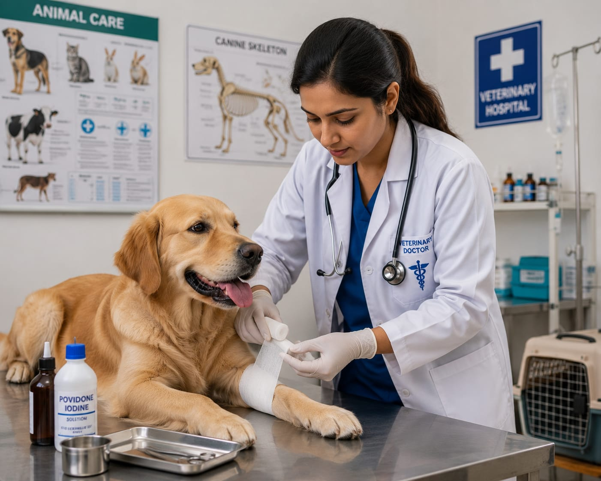

- Imagine you have a dog in your home. One day it is not feeling well.
- You take the dog to a veterinary hospital.
- There, a person examines the dog and gives proper treatment and medicines.
- That person is called a Veterinary Doctor.
- 👉 In simple words: Veterinary Doctors find out the health problems of animals and give proper treatment.
Veterinary Doctor
🧑🎨 What Do They Do?

🎓 How to Become a Veterinary Doctor
These Veterinary Science programs help students learn animal healthcare, surgery, disease treatment, livestock care, and animal management skills.
BVSc & AH (Bachelor of Veterinary Science and Animal Husbandry)
Duration: 5.5 Years (Includes Internship)
Eligibility: 12th Pass with Physics, Chemistry, Biology, and English (Minimum 50% Marks)
Exam: NEET-UG / State-Level Veterinary Entrance Exams
📝 Exam Details
(Click on the exam name to see full details)
NEET-UG State-Level Veterinary Entrance ExamsNote: Veterinary programs include classroom learning, animal hospital training, practical sessions, and internships to prepare students for animal healthcare careers.
These advanced Veterinary Science programs help students specialize in animal surgery, disease diagnosis, research, livestock management, and advanced treatments.
MVSc (Master of Veterinary Science)
Duration: 2 Years
Eligibility: BVSc & AH Graduate with Internship Completion
Exam: ICAR AIEEA-PG / Institutional Entrance Exams
📝 Exam Details
(Click on the exam name to see full details)
ICAR AIEEA-PG Institutional Entrance ExamsNote: Advanced Veterinary programs focus on specialized animal care, surgery, clinical practice, research, and practical hospital-based training.
Note:
(Age limits, marks, and admission process may vary depending on the college or state. These courses are available in many colleges and universities across India. You can choose colleges based on your location, budget, and entrance exams.)
🏛️ Top Colleges & Institutes for Veterinary Science in India
(Tap on a college to view details)
After 12th (Degrees & Professional Diplomas)
Indian Veterinary Research Institute (IVRI), Bareilly National Dairy Research Institute (NDRI), Karnal College of Veterinary and Animal Sciences, Mannuthy (Thrissur) College of Veterinary and Animal Sciences, Pookode (Wayanad) Madras Veterinary College (TANUVAS), Chennai Guru Angad Dev Veterinary and Animal Sciences University (GADVASU), Ludhiana Bombay Veterinary College, Mumbai Veterinary College and Research Institute, Namakkal College of Veterinary Science and Animal Husbandry (OUAT), Bhubaneswar Veterinary College, Hebbal (Bengaluru)After Graduation (PG & Advanced Craft)
Indian Veterinary Research Institute (IVRI), Bareilly National Dairy Research Institute (NDRI), Karnal Madras Veterinary College (TANUVAS), Chennai Guru Angad Dev Veterinary and Animal Sciences University (GADVASU), Ludhiana College of Veterinary and Animal Sciences, Mannuthy (Thrissur) Bombay Veterinary College, Mumbai Lala Lajpat Rai University of Veterinary and Animal Sciences (LUVAS), Hisar West Bengal University of Animal and Fishery Sciences, Kolkata College of Veterinary Science, Rajendranagar (Hyderabad) College of Veterinary and Animal Sciences, Pookode (Wayanad)STEP 1
Imagine you are working as a Veterinary Doctor in an animal hospital or clinic.
STEP 2
People bring pets and animals with different health problems for treatment.
STEP 3
You examine the animals carefully to find out what health problem they have.
STEP 4
You give medicines, injections, or treatments to help the animals recover.
STEP 5
You help animals stay healthy and guide pet owners on proper care.
STEP 6
If treating and caring for animals excites you, this career may suit you.
🐶
Veterinary Hospitals
Treat sick and injured pets and animals.
🩺
Veterinary Clinics
Examine animals and provide medicines and treatments.
🐄
Animal Farms
Care for cows, goats, poultry, and other farm animals.
🦁
Zoos & Wildlife Centres
Treat wild animals and help protect their health.
🏛️
Government Animal Husbandry Departments
Work in public animal healthcare and vaccination programs.
🎓
Veterinary Colleges
Teach students and provide practical training.
🔬
Research Centres
Study animal diseases and develop treatments and vaccines.
✈️
Abroad Opportunities
Work in animal hospitals, farms, and wildlife centres in different countries.
(Click Yes or No for each question)
1. Do you like animals and pets?
2. Are you interested in learning about animal health and care?
3. Have you ever thought about treating sick animals?
4. Are you interested in learning how doctors treat animals?
5. Imagine a dog visiting your clinic with an injured leg. You examine the dog and give proper treatment to help it recover. Does this excite you?